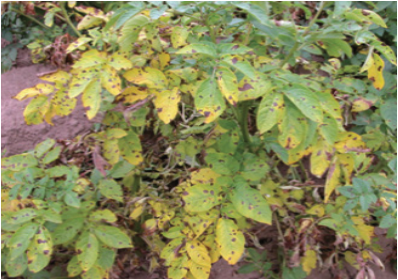

Symptoms of the disease: Dark, water-soaked lesions appear on leaves, beginning
at the tips and rapidly expanding, turning brown and causing leaf death. Stems
develop dark brown to black lesions, which can girdle and kill the plant. Infected
tubers become firm brown and develop corky spots beneath the skin, which may
become more extensive and lead to rot and secondary infections.
Management of the disease: Apply the recommended fungicides as a preventive
measure or at the first sign of disease. Adopt improved cultural practices such
as crop rotation, field sanitation, plant spacing, and irrigation. Use round potato
varieties that are tolerant to late blight. Harvest tubers when vines are dry to
reduce the risk of tuber infection. Store potatoes in cool, dry conditions and
regularly inspect stored potatoes for signs of late blight. Clean the working tools
and equipment to prevent the spread of the pathogen. Combining these strategies
allows you to effectively manage late blight and minimise its impact on your
crops.
(b) Early blight potato disease
Early blight potato disease is a fungal disease caused by the pathogen Alternaria
solani. It is favoured by warm temperatures (24-29ºC) and high relative humidity.

Figure 5.7: Early blight in potato plant and tuber
Symptoms of the disease: Dark, concentric rings appear on infected leaves.
These spots usually start on older leaves and then progress to younger foliage.
Dark, sunken spots may also strap the stem, leading to wilting and death of the
plant (Figure 5.7).